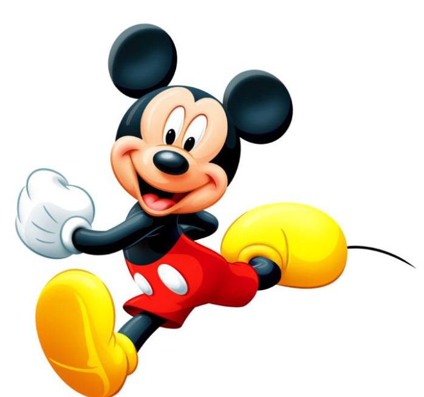

米奇是迪士尼代表人物形象，是一只有着圆滚滚的大脑袋，圆滚滚的大耳朵，梨形的身体与像橡胶软管一样柔软，没有明显的关节，可以自由拉伸仿佛没有骨骼的四肢的小老鼠。他以随和，乐观，活跃，充满奇思妙想的性格广受世界各地的观众的欢迎。他总是吹着口哨，哼着小曲，蹦蹦跳跳，充满活力。
 米奇
米奇
米奇是迪士尼代表人物形象，是一只有着圆滚滚的大脑袋，圆滚滚的大耳朵，梨形的身体与像橡胶软管一样柔软，没有明显的关节，可以自由拉伸仿佛没有骨骼的四肢的小老鼠。他以随和，乐观，活跃，充满奇思妙想的性格广受世界各地的观众的欢迎。他总是吹着口哨，哼着小曲，蹦蹦跳跳，充满活力。
米奇
米妮
米妮老鼠是米奇老鼠的女朋友，她是一个非常甜美的小女生，头上常戴着一只硕大的蝴蝶结，十分可爱。米妮平时很安静，甚至经常害羞，但是当她遇到坏蛋，特别是要谋害米奇的那些坏蛋的时候，她毫不手软，并且具备打击这些坏蛋的能力。
唐老鸭为人友好,性格乐观,是个乐天派,但当事情进行得不顺心时,便常常大发脾气。他有无穷的决心,坚毅的他近乎是固执。唐老鸭很在乎和关心他的家人和朋友,有福同享,有难同当,办事还算信得过。他的弱点就是我们的弱点,所以就比较多他是一个可爱的底层小人物,虽失败不断却坚持不解。
唐老鸭